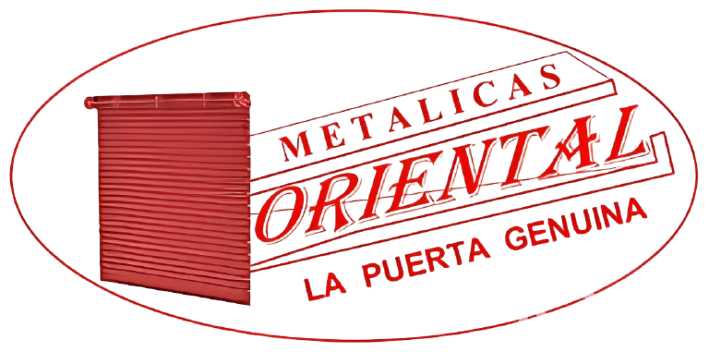

Puertas

Portones

Lanfor

Andamios
Nuestros Servicios
Tenemos varios productos que ofrecemos a nuestros clientes
Modelos Disponibles
Si quieres más información, te puedes contactar con nosotros para revisar más modelos

Puerta Principal
Puerta de entrada principal a la vivienda con diseño moderno.

Puerta de Patio
Puerta resistente para acceso al patio o jardín.

Portón Automático
Portón automático para entrada de vehículos con control remoto.

Portón Residencial
Portón de diseño elegante para residencias privadas.

Lanford Estándar
Modelo estándar de la línea Lanford con acabado premium.
Sobre Metálicas Oriental
Llevamos más de 15 años creando productos e instalando en diferentes ubicaciones. Nuestro compromiso es brindar la mejor calidad y servicio a nuestros clientes. Nuestros trabajos han tenido luegar en diferentes ubicaciones, como:
Quito
Latacunga
Sigchos
Machachi
Tambillo

Proyectos
Te presentamos algunos de nuestros proyectos!
Puerta de Calle
Nuestra puerta de calle modelo clásico está diseñada con materiales de alta resistencia y detalles ornamentales que realzan la entrada de su hogar. Fabricada en hierro forjado con acabados de primera calidad, ofrece seguridad y elegancia. Ideal para viviendas que buscan un toque tradicional sin sacrificar la protección. Disponible en varios colores y medidas para adaptarse a cualquier fachada.

Lanford Blanca
El modelo Lanford Blanca representa la evolución en puertas de garaje con su diseño minimalista y funcional. Sus paneles horizontales ofrecen un acabado moderno que combina perfectamente con arquitecturas contemporáneas. Fabricada con aluminio reforzado, proporciona ligereza y durabilidad, además de un excelente aislamiento térmico. Incluye sistema de apertura silenciosa y opciones de automatización.

Lanfords y Ventanas
Nuestro sistema integrado Lanfords y Ventanas combina funcionalidad y estética para espacios residenciales y comerciales. El portón seccional con acabado metálico se adapta a diferentes dimensiones de apertura, mientras su diseño robusto garantiza máxima seguridad. Ideal para garajes amplios, incluye sistema de apertura motorizada y opción de panel con ventanas para mayor luminosidad.

Lanford 1
El modelo Lanford 1 destaca por su diseño minimalista y líneas limpias, perfecto para arquitecturas modernas. Este panel de muro cortina ofrece una solución elegante que combina seguridad y estética. Fabricado con materiales de alta resistencia a la intemperie, proporciona un excelente aislamiento térmico y acústico. Su instalación es versátil, adaptándose tanto a nuevas construcciones como a renovaciones de espacios existentes.